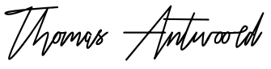

Niezależne badania medyczne potwierdzają – dzięki tej metodzie schudniesz 27 kg w 28 dni i przyspieszysz metabolizm o 75%.
Dzień dobry,
Nazywam się prof. Thomas Antwoord i jestem naukowcem z ponad 30-letnim stażem, specjalizuję się w biologii makromolekularnej, którą wykładam na University of Medicine w Nowym Jorku. Pragnę przedstawić Ci moje największe osiągnięcie, które zyskało uznanie wśród lekarzy na całym świecie oraz za które otrzymałem kilka nagród i nominacji najwyższej rangi. Otóż udało mi się opracować w 100% naturalną i bezpieczną dla organizmu kurację, przez co absolutnie każdy może schudnąć aż 27 kg w jedyne 28 dni – w pełni automatycznie, bez stosowania diet i katowania się na siłowni.
Dlatego, już nie musisz zmieniać trybu życia, aby:
- schudnąć 27 kg w 28 dni bez żadnych diet, głodówek czy żmudnych ćwiczeń, które nigdy nie przynosiły żadnych efektów;
- obniżyć poziom glukozy i skutecznie zlikwidować powoli rozwijającą się cukrzycę;
- unormować poziom cholesterolu już po pierwszych 7 dawkach tej rewolucyjnej formuły i wyeliminować ryzyko wystąpienia miażdżycy aż o 78,9%;
- Błyskawicznie wygrasz z łupieżem
- bezpowrotnie pozbyć się efektu jo-jo;
- trwale zredukować ryzyko zawału, udaru i zwyrodnienia stawów aż o 92%;
- Doprowadzisz działanie gruczołów łojowych do właściwego stanu
- mieć 7 razy więcej energii i wyglądać jak milion dolarów...
To wszystko bez chodzenia do specjalistów, monotonnych diet, miliona wyrzeczeń, narastającej frustracji i intensywnych treningów. Do tego zaoszczędzając tysiące złotych. Jeśli chcesz to wszystko osiągnąć, to koniecznie przeczytaj, co mam Ci do powiedzenia.
Nieistotne ile masz lat, od jak dawna zmagasz się z nadwagą i jakie stosujesz metody odchudzania. Nieważne, czy Twoja nadwaga jest uwarunkowana genetycznie, czy przyjmujesz leki lub czy jest to efekt ciąży. Nie ma znaczenia, czy Twój wskaźnik BMI tylko minimalnie przekracza normę czy zmagasz się z otyłością. Niezależnie ile masz za sobą prób odchudzania i jak bardzo jesteś rozgoryczona… Położyłem temu wszystkiemu kres. Stosując moją bioaktywną kurację, w jedyne 28 dni schudniesz aż 27 kg bez efektu jo-jo, pozbędziesz się cellulitu oraz będziesz mieć idealną figurę. W pełni automatycznie, bez wysiłku, wszelkich ograniczeń i nieskutecznych diet.
Powiem Ci, dlaczego moja innowacyjna kuracja odchudzająca nie ma sobie równych:
- Jest w 100% naturalna i działa zgodnie z organizmem. Stosując głodówki czy restrykcyjne diety nigdy skutecznie nie schudniesz. Naturalną potrzebą każdego człowieka jest zaspokajanie potrzeb fizjologicznych, m.in. dostarczanie pożywienia. Tak nas skonstruowała matka natura. Gdy odmawiasz sobie jedzenia, to działasz wbrew swojemu organizmowi i jego potrzebom. Takie metody nigdy nie przynoszą efektów. Analogicznie dzieje się, gdy wykonujesz nienaturalne ćwiczenia, do których Twoje ciało jest nieprzyzwyczajone. Moja formuła poprzez inny sposób redukcji tkanki tłuszczowej oraz przyspieszeniu procesów metabolicznych…
- Gwarantuje natychmiastowy i trwały efekt. Nie musisz miesiącami jeść tylko zdrowego jedzenia, wyliczać kalorii, odmawiać sobie ukochanych potraw i słodkości. Wystarczy „przestawić” organizm na inny tryb spalania tłuszczu. Nie trzeba intensywnie ćwiczyć na siłowni, biegać czy chodzić na basen. Wszystko jest kwestią ustabilizowania procesów przemiany materii.
- Jest bezpieczna dla zdrowia.Już po zażyciu 1 dawki organizm wydala niebezpieczne toksyny oraz obniża poziom cholesterolu i wyrównuje poziom glukozy we krwi. Moja metoda oczyszcza organizm ze śmiercionośnych złogów i toksyn, a także natychmiast redukuje tkankę tłuszczową. W sposób natychmiastowy zmniejsza to ryzyko m.in. udaru, wylewu, miażdżycy, zawału czy cukrzycy oraz zmian zwyrodnieniowych w stawach i kręgosłupie.
- Nie trzeba stosować głodówek. Tak, jak mówiłem: poddając się mojej kuracji jesz co chcesz, ile chcesz i kiedy chcesz. Problemem w odchudzaniu nie jest jedzenie, tylko to jak organizm poddaje je procesom metabolicznym.
- Trwale i skutecznie odchudza. Jak już wspomniałem na samym początku – moja biomedyczna metoda funkcjonuje zgodnie z zegarem biologicznym. Przez co jest niemożliwe, że wystąpi efekt jo-jo, tak charakterystyczny dla innych nieskutecznych kuracji i diet.
- Samoczynnie redukuje tkankę tłuszczową przez 24h/dobę. Nieważne czy śpisz czy leżysz na kanapie czy jesteś w pracy – non stop zrzucasz zbędne kilogramy. Wszystko przez to, że moja formuła zmniejsza łaknienie oraz przyspiesza metabolizm i spalanie tłuszczu aż o 75%.
- Oszczędza Twoje pieniądze. Stosując tą makromolekularną formułę nie wydajesz bajońskich sum na trenerów personalnych, wizyty u specjalistów i „dietetyczne” dania. Bierzesz ją przez tylko 28 dni i pozbywasz się zbędnych kilogramów raz na zawsze.
Wynalazłem w 100% naturalny sposób, który błyskawicznie likwiduje przyczyny nadwagi oraz w pełni automatycznie spala tkankę tłuszczową
Dzięki tej przełomowej metodzie na dobre pozbędziesz się nadprogramowych kilogramów, będziesz mieć idealną figurę z talią osy, a także odciążysz stawy i uchronisz się od śmiertelnych powikłań, takich jak, cukrzyca, miażdżyca, a nawet zawał. Odejdzie w niepamięć rozmiar XXXL, wieczna zadyszka, ból przy każdym najmniejszym ruchu i ciało oblane potem. Ale przede wszystkim zapomnisz o ciągłym uczuciu wstydu, narastającej frustracji i niezdrowej zazdrości, które towarzyszyły Ci na każdym kroku.
Stosując moją bioaktywną kurację po 28 dniach zrzucisz minimum 27 kg. Ponadto, zmieścisz się w rozmiar S, a Twoja sylwetka będzie zachwycać każdego. Nie będziesz się wstydzić swojego ciała, które z dumą będziesz mógła pokazać na plaży czy na basenie. To wszystko w 100% naturalnie i bezpiecznie dla organizmu bez żadnych skutków ubocznych. Wszystko dzięki mojej najnowszej generacji metodzie walki z kilogramami, która likwiduje przyczyny nadwagi oraz otyłości i w sposób automatyczny i pozbawiony wysiłku spala tkankę tłuszczową 24h/dobę. Jak to wszystko osiągnąłem?
Musiałem pomóc mojej siostrze w walce z kompleksami
Według najnowszych badań, co trzecia osoba na świecie ma nadwagę. Nikt nie ma wątpliwości, że ta choroba cywilizacyjna to duży kłopot, w szczególności dla kobiet. Szczupłe i zgrabne ciało zawsze zwiększa pewność siebie i poczucie własnej wartości oraz powoduje, że czujemy się atrakcyjni. Potrzeba podobania się innym jest absolutnie normalna i naturalna. Jednak nadwaga i otyłość tego nie ułatwiają, wręcz przeciwnie – mogą doprowadzić do stanów depresyjnych. Oprócz zagrożeń dla psychiki niosą za sobą także poważne zagrożenie dla zdrowia. Dodatkowe kilogramy zwiększają ryzyko miażdżycy, zatorów, udarów czy zawału aż o 87%! Nadwaga jest też przyczyną poważnych schorzeń i zwyrodnień stawów, które utrudniają codzienne funkcjonowanie, np.: wad postawy czy halluksów. Niestety, problemy z nadwagą dotknęły także moją siostrę Michelle…
Odkąd pamiętam moja siostra była zawsze szczupła i zgrabna, typ kobiety za którą każdy mężczyzna się oglądał. Nigdy nie trzymała diety, jadła, co chciała, miała świetną przemianę materii. Jednak wraz z upływem lat, po urodzeniu trójki dzieci, zaczęła przybierać na wadze. Na początku zupełnie się tym nie przejmowała, a nawet żartowała, mówiąc że „kochanego ciałka nigdy za wiele”. Niestety, ale prawda była inna. Fałdki na brzuchu, masywne uda i cellulit były źródłem jej kompleksów. Mimo mojej bezgranicznej miłości, kochającego męża i dzieci oraz cudownych przyjaciół jej stan się pogarszał. Zarówno ten fizyczny, jak i psychiczny.
Michelle nienawidziła swojego ciała, nie umiała pogodzić się ze swoim wyglądem. Na początku była tylko rozdrażniona i poirytowana, co jest normalne. Jednak prawdziwe schody zaczęły się, gdy przestała wychodzić z domu i unikała ludzi. Krzyczała, że „nie chce być postrachem”, „jest wstrętną, tłustą słonicą” oraz że „nie chce, przynosić wstydu rodzinie.” Do tego ciągły płacz, histeria. To był istny dramat.
Nadwaga chciała zapędzić moją siostrę do grobu!
Jednak zły stan psychiczny tylko zwiastował najgorsze. Michelle zaczęła mieć kłopoty ze zdrowiem. Restrykcyjne diety i głodówki tak spowolniły jej metabolizm, że tyła jeszcze szybciej niż poprzednio. Doprowadziło to do poważnych zwyrodnień w stawach, nie była w stanie samodzielnie się poruszać, musiałem jej kupić laskę. Poszła do lekarza, który stwierdził u niej stan przedzawałowy. Usłyszała: „Albo Pani schudnie albo nie dożyje Pani ślubu swojego syna.” Jednak gwoździem do trumny był moment, gdy mąż zostawił ją dla młodszej kochanki… Nie dość, że czuła wstręt do siebie, to jeszcze straciła zdrowie i męża.
Jak odkryłem innowacyjny sposób na eliminację nadwagi?
Musiałem pomóc mojej siostrze odzyskać szczupłą sylwetkę, a co za tym idzie dobre samopoczucie i zdrowie. Pragnąłem, by wreszcie przestała zadręczać się myślami na temat wyglądu i by znowu była tą roześmianą, szczęśliwą Michelle jaką zawsze pamiętałem. W pewnym momencie pomyślałem: „Chłopie! Jesteś naukowcem i jeszcze nic nie wymyśliłeś na głupią nadwagę? Przecież całą biologię i chemię masz w małym palcu! Musisz działać!” Następnego dnia pojechałem do laboratorium i rozpocząłem badania...
Trwało to ponad rok, a połączenia różnych substancji czynnych testowałem na Michelle. Zależało mi na tym, by środek na odchudzanie był w 100% naturalny i bezpieczny dla organizmu i tylko takie składniki aktywne podawałem mojej siostrze. Obszerna wiedza naukowa, wytężona praca i inspiracja Azją dały niesamowity owoc – opracowałem unikalną biomedyczną formułę na odchudzanie. Nazwałem ją RedSlimtea Extract. Od razu zgłosiłem ją do niezależnych badań. Jej 97% skuteczność została potwierdzona przez najbardziej renomowane ośrodki medyczne w USA. Jeszcze na poziomie testów moja formuła w naturalny i automatyczny sposób pomogła zrzucić ochotnikom nie mniej niż 14 kg po 2 tygodniach stosowania kuracji.
Moja siostra od razu po zastosowaniu mojej rewolucyjnej metody na odchudzanie poczuła się znacznie lepiej. Nie miała już napadów głodu, niepohamowanej chęci na coś słodkiego i coraz bardziej rozpierała ją energia. Jednak to był tylko początek. Po pierwszym tygodniu schudła aż 7 kg! „Thomas, czuję się lekka jak piórko!” – wykrzyczała pełna radości, gdy roztańczonym krokiem mierzyła swoją ulubioną sukienkę, w którą nie mieściła się od 4 lat!
Moja siostra schudła 27 kg w 1 miesiąc!
Nie mogliśmy uwierzyć w to, co się działo – z dnia na dzień waga wskazywała coraz mniej kilogramów, ponadto zmniejszył się obwód w biodrach i udach oraz w talii o całe 10 cm. Siostra pozbyła się też cellulitu, którego tak się wstydziła. Po 2 miesiącach stosowania kuracji Michelle wyznała przeszczęśliwa: „Właśnie przymierzyłam mój stary strój kąpielowy! Leży na mnie idealnie! Odzyskałam figurę 20-latki! Wynalazłeś antidotum na otyłość! Musisz upublicznić tę metodę na odchudzanie, to może pomóc tylu ludziom!” Nie mogliśmy uwierzyć w to, co się działo – z dnia na dzień waga wskazywała coraz mniej kilogramów, ponadto zmniejszył się obwód w biodrach i udach oraz w talii o całe 10 cm. Siostra pozbyła się też cellulitu, którego tak się wstydziła. Po 2 miesiącach stosowania kuracji Michelle wyznała przeszczęśliwa: „Właśnie przymierzyłam mój stary strój kąpielowy! Leży na mnie idealnie! Odzyskałam figurę 20-latki! Wynalazłeś antidotum na otyłość! Musisz upublicznić tę metodę na odchudzanie, to może pomóc tylu ludziom!”
Dzięki mojej bioaktywnej, odchudzającej formule Michelle zrzuciła 37 kg w 2 miesiące, a był to bardzo ciężki przypadek. Chudła w pełni automatycznie, bez żadnego wysiłku i stosowania drakońskich diet. Poza tym przyspieszyła metabolizm o 75%, oczyściła organizm z toksyn i ma więcej energii! Ale to nie koniec! Podczas wizyty u lekarza okazało się, że wyniki są książkowe. Poziom cholesterolu unormował się, a także zmniejszyło się przeciążenie stawów i kości o 87,8%! W tym momencie już nie obawiamy się udaru, miażdżycy czy zawału!
Do tej pory tak ekstremalny spadek wagi bez zastosowania operacji zmniejszenia żołądka był niemożliwy. Teraz dzięki mojej rewolucyjnej formule można schudnąć błyskawicznie i w 100% bezpiecznie dla zdrowia. I to bez efektu jo-jo!
Krótko wyjaśnię Ci, dlaczego moja biomedyczna metoda odchudzająca jest tak skuteczna i rewolucyjna. Jej działanie odbywa się na dwóch płaszczyznach:
-
Automatycznie spala tkankę tłuszczową
W mojej kuracji odchudzającej zawarłem dwie naturalne substancje, które błyskawicznie rozbijają komórki tłuszczowe – fitosterole i polifenole. Wystarczy zażyć 1 dawkę dziennie, by uwolnić się od żmudnych ćwiczeń, monotonnych diet i katowania się na siłowni. Jeśli chcesz dodatkowo wyrzeźbić ciało – oczywiście zawsze możesz ćwiczyć. Jednak te dwa naturalne składniki aktywne znajdujące się w mojej formule są odpowiedzialne za szybkie spalanie tłuszczu z ud, pośladków czy brzucha, a także za pozbycie się cellulitu. Wystarczy,że będziesz regularnie stosować tą metodę, a po 28 dniach będziesz mieć o 10 cm mniej. Już po 1 zastosowaniu organizm „przestawia się” w automatyczny tryb spalania tłuszczu. Dzieje się to 24h/dobę, nawet gdy śpisz. W ten sposób także hamujesz efekt jo-jo. Tym samym w sposób trwały i bezpowrotny pozbywasz się tłuszczu. Stosując moją biomolekularną kurację blokujesz odkładanie się tłuszczów już na poziomie nanokomórkowym i przyspieszasz procesy metaboliczne. I to już po 1 dawce!
-
Błyskawicznie oczyszcza organizm
Nie ma możliwości zrzucić nawet 0,5 kg, jeśli nie oczyścisz organizmu z toksyn. Nie schudniesz, nieważne jak długo byś się głodziła czy trenowała na siłowni. Wszystko przez zalegające w Twoich jelitach ponad 15 kg gnijących złogów nieprzetrawionego pożywienia oraz krążące w żyłach trujące toksyny. To właśnie one blokują procesy metaboliczne oraz uniemożliwiają redukcję tkanki tłuszczowej. Niestety, ale nie ustrzeżesz się ich. Są w powietrzu, wodzie, jedzeniu. Dosłownie wszędzie. Jednak dzięki aktywnym fitosterolom, moja biomedyczna formuła błyskawicznie oczyszcza organizm z niebezpiecznych toksyn. Organizm już po 1 dawce aż 5-krotnie szybciej spala tkankę tłuszczową, natychmiast wydala toksyny i przyspiesza metabolizm aż o 75%. Dzięki temu zmniejsza się apetyt, nie ma napadów wilczego głodu oraz efektu jo-jo. Już w trakcie pierwszych 24 godzin stosowania mojej makromolekularnej formuły dochodzi do aktywnego i automatycznego spalania tłuszczu.
Dlaczego moja metoda na odchudzanie została okrzyknięta „przełomowym odkryciem w walce z nadwagą”?
MA PONAD 97% SKUTECZNOŚCI
Przed
Toksyny i tłuszcz blokujące procesy metaboliczne w układzie trawiennym.
Po
Organizm oczyszczony z toksyn i tłuszczów, metabolizm przyspieszony o 75%
Do dziś skuteczne i bezpieczne dla zdrowia odchudzanie było wręcz niemożliwe. Teraz, dzięki mojej metodzie na odchudzanie nie tylko zatrzymuje się, ale też całkowicie blokuje proces tycia. Potwierdzeniem tego nie jest tylko przypadek mojej siostry Michelle, ale także ponad 17 tys. zadowolonych osób, które zastosowały moją biomolekularną formułę i cieszą się szczupłymi sylwetkami. Skuteczność mojej rewolucyjnej kuracji została dowiedziona ponad wszelką wątpliwość przez renomowany Healthy Diet & Nutrition Institute w San Francisco. Jest to przełomowe odkrycie na międzynarodową skalę, które już teraz zdobyło uznanie i szacunek wybitnych specjalistów z zakresu żywienia.
JEST BAJECZNIE PROSTA I W 100% BEZPIECZNA DLA ORGANIZMU
Hasło, którym kierowałem się przy tworzeniu metody na odchudzanie brzmi: „Naturalne składniki potrafią zdziałać cuda. Wystarczy tylko dobrać odpowiednie proporcje i kompozycję!” Dlatego w mojej kuracji nie ma ani grama chemii, tylko same aktywne, naturalne i w pełni bezpieczne dla zdrowia substancje aktywne. Zamknąłem je w formie prostych do połknięcia tabletek, aby każdy mógł samodzielnie w domowym zaciszu przeprowadzić kurację. Wystarczy tylko 1 dawka dziennie, by przekonać się, jak z dnia na dzień radykalnie zmniejsza się objętość ud, pośladków i brzucha, rzeźbiąc idealną figurę.
Nikt nie będzie mógł uwierzyć, że nie zrobiłaś zupełnie nic, by schudnąć. Twoja rodzina, przyjaciele i znajomi oniemieją na Twój widok!
Moja biomedyczna kuracja w formie szybko przyswajalnych tabletek, działa 3płaszczyznowo, co gwarantuje:
- 100% bezpieczeństwo dla organizmu – moja rewolucyjna metoda odchudzająca nie ma w sobie żadnych wypełniaczy ani niebezpiecznych szczepów bakterii i drobnoustrojów, tak jak ponad 47% dostępnych na rynku specyfików. Poprzez zastosowanie wyłącznie naturalnych substancji aktywnych jest w 100% bezpieczna i nie wywołuje skutków ubocznych. W tym tkwi sekret szybkiego przyswajania oraz skutecznego oddziaływania na przemianę materii.
- Zrównoważone nawodnienie – jeśli popijesz wodą 1 dawkę, to ułatwisz o 367% przyswojenie substancji czynnych, ale też w zrównoważony sposób nawodnisz organizm. Jest to bardzo istotne, by trwale pozbyć się zbędnych kilogramów. Wszystkie dostępne metody odwadniają, co skutkuje zaburzeniem prawidłowego funkcjonowania całego organizmu. Dochodzi do szeregu reakcji obronnych, tym samym – Twój organizm „chroni się” przed spalaniem tkanki tłuszczowej. W taki sposób nigdy nie schudniesz. Już po 1 dawce mojej biomolekularnej metody organizm jest nawodniony 4 razy szybciej.
- Błyskawiczne działanie – dzięki w pełni naturalnej i bardzo łatwej w przyswajaniu formie, moja innowacyjna kuracja odchudzająca zaczyna działać od razu po zażyciu. Wierz mi, że już teraz spalałabyś tłuszcz, gdybyś wzięła tabletkę przed rozpoczęciem czytania tego tekstu!
Czy chcesz przegapić niepowtarzalną szansę, by mieć idealną figurę?
Możesz nadal tkwić w tym samym punkcie i cierpieć przez kompleksy wywołane nadwagą oraz coraz bardziej podupadać na zdrowiu. W dalszym ciągu możesz katować się dietami, które nie dają żadnych efektów. Jednak po co to robić, jeśli gwarantuję Ci niezwykle szybki, łatwy i w 100% bezpieczny środek na schudnięcie aż 27 kg w zaledwie 28 dni i uzyskanie szczupłej, atrakcyjnej sylwetki? Wystarczy jedynie stosować przez 28 dni biomolekularną formułę, abyś dołączyła do ponad 17 tys. zadowolonych pacjentów, którzy po zażyciu RedSlimtea Extract schudli minimum 27 kg oraz cieszą się perfekcyjną figurą.
Nic nie tracisz
Zażywając regularnie RedSlimtea Extract schudniesz 27 kg w tylko 28 dni. Ponadto, nic nie ryzykujesz! Ze względu na swoją przełomowość, moja kuracja odchudzająca posiada prestiżową gwarancję potrójnej satysfakcji - oryginalności, jakości oraz zadowolenia.
Gwarancja potrójnej satysfakcji
- Gwarancja oryginalności – RedSlimtea Extract to jedyny taki preparat, w którym wykorzystano niezwykle skuteczne działanie naturalnych substancji odchudzających. To unikalne połączenie różnych ekstraktów z Pu-erh, zwalcza przyczyny nadwagi i otyłości oraz w sposób automatyczny i pozbawiony wysiłku redukuje tkankę tłuszczową. Tym samym masz 100% pewności, że dostaniesz oryginalną metodę na odchudzanie, dostępną tylko za pośrednictwem tej strony.
- Gwarancja jakości – ze względu na zaawansowany proces wytwarzania kuracji, mieszanka substancji czynnych zawartych w RedSlimtea Extract spełnia wszystkie najwyższe normy jakości. To niebywale silne zestawienie najaktywniejszych, naturalnych składników jest skomponowane w taki sposób, by było w pełni bezpieczne dla zdrowia i nie wywoływało żadnych skutków ubocznych. Wszystko, by w 100% spełnić nawet najbardziej wymagających konsumentów.
- Gwarancja zadowolenia – niezwykła skuteczność metody jest potwierdzona tym, że wszyscy pacjenci z łatwością schudli minimum 27 kg w jedyne 28 dni. Ja oraz wszyscy dookoła jesteśmy przekonani o tym, że pozbędziesz się nadwagi i nareszcie przestaniesz się wstydzić swojej sylwetki. Na czym Ci bardzo zależy, prawda?
Pozbądź się nadwagi w 28 dni z RedSlimtea Extract! Szybko, prosto i bezpiecznie
Największe koncerny farmaceutyczne na świecie wręcz zabijają się o wykupienie patentu na moją makromolekularną metodę na odchudzanie. Jeśli sprzedam patent, to wtedy formuła będzie dostępna dla każdego, nawet w najdalszym zakątku świata, ale na pewno będzie bardzo droga.
Nim to nastąpi, to postanowiłem ją udostępnić w niższej, promocyjnej cenie. W tym momencie moja przełomowa kuracja jest tańsza aż o 320 zł. Wszystko po to, by pomóc schudnąć setkom osób zmagających się z nadwagą i otyłością.
Tym samym zachęcam Cię do skorzystania z tej niepowtarzalnej szansy! Złożenie zamówienia jest dziecinnie proste. Wystarczy, że poświęcisz tylko 2 minuty i wypełnisz poniższy formularz, a już po kilku dniach dostaniesz przesyłkę, którą wygodnie opłacisz u listonosza bądź kuriera.
Bardzo Ci dziękuję za czas, który poświęciłaś na przeczytanie mojego listu. Życzę Ci dużo zdrowia i szczęścia w Twoim nowym życiu – pozbawionym nadwagi i wstydu, ale na pewno z mnóstwem pozytywnej energii i pewnością siebie. Dziękuję Ci za czas, który przeznaczyłaś na przeczytanie mojej wiadomości.

prof. Thomas Antwoord
Zamów RedSlimtea Extract z rabatem i zaoszczędź 320 zł
Liczba dostępnych sztuk
447 zł
127 zł
Zamów teraz i oszczędź 320 zł.
Po wyczerpaniu limitu 120 zamówień promocja przepada.